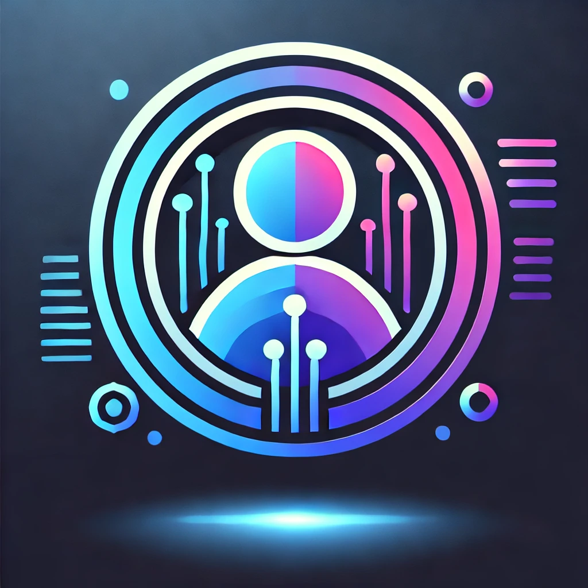
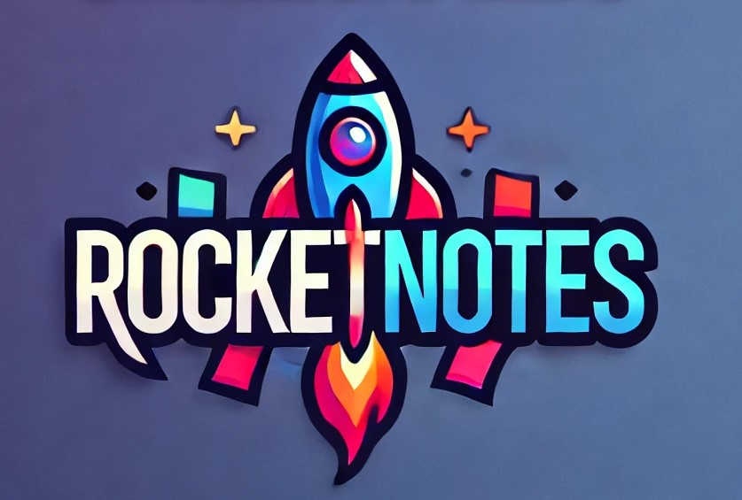

Bem-vindo !!!
Sou Gabriel de Carvalho, desenvolvedor full stack com paixão por tecnologia e inovação. Neste portfólio, você encontrará meus projetos e habilidades. Formado em Ciência da Computação e com pós-graduação em Engenharia de Dados, estou sempre em busca de novos desafios, especialmente nas áreas de inteligência artificial e machine learning. Sinta-se à vontade para explorar meu trabalho e entre em contato se tiver alguma dúvida!
MINHAS ESPECIDALIDADES.
Website
Tenho expertise na criação de Landing Pages que não apenas atraem, mas também convertem. Com um design intuitivo e estratégias de marketing digital integradas, cada página é otimizada para oferecer a melhor experiência ao usuário. Meu objetivo é desenvolver landing pages que reflitam a identidade da marca e, ao mesmo tempo, impulsionem resultados tangíveis, como aumento de leads e vendas.
Loja online
Minha especialidade é a criação de lojas online que combinam design atraente e funcionalidade robusta. Com um layout intuitivo e otimização para dispositivos móveis, cada loja é projetada para facilitar a navegação e maximizar as vendas. Além disso, implemento soluções de marketing digital para atrair e reter clientes, garantindo que sua loja se destaque no competitivo mundo do e-commerce.
Blogs
Especializo-me na criação de blogs que combinam design atraente e conteúdo envolvente. Cada blog é projetado para oferecer uma experiência de leitura otimizada, com foco em acessibilidade e interatividade. Utilizo técnicas de SEO para garantir que seu conteúdo alcance o público certo, enquanto ferramentas de análise ajudam a monitorar o desempenho e o engajamento. Meu objetivo é capacitar autores e criadores de conteúdo a compartilhar suas ideias de maneira eficaz e impactante.
MUITO PRAZER, SOU GABRIEL DE CARVALHO.
Tenho 27 anos e atualmente trabalho como freelancer, com sólida experiência no desenvolvimento front-end. Domino tecnologias como HTML, CSS, JavaScript, React, SCSS e TypeScript, criando interfaces dinâmicas, responsivas e escaláveis. Meu foco é proporcionar uma experiência de usuário fluida, utilizando práticas modernas de desenvolvimento e otimização de performance.
No back-end, minha especialidade é o desenvolvimento de APIs robustas e eficientes utilizando Node.js, Express e TypeScript. Tenho experiência com bancos de dados relacionais, como PostgreSQL e MySQL, e também com bancos de dados NoSQL, como MongoDB. Estou sempre focado na construção de soluções performáticas, seguras e que atendam às necessidades específicas de cada projeto. Busco constantemente aprimorar minhas habilidades e estou sempre aberto a novos desafios e oportunidades de aprendizado.
MEU PORTFÓLIO

Projeto Cadastro de Usuário
Este projeto foi desenvolvido com o intuito de cadastrar usuários e exibi-los em tempo real. A aplicação foi construída utilizando React com Vite no front-end, e Node.js, Express, Prisma e MongoDB no back-end, garantindo performance e escalabilidade.
Projeto Streaming
Este projeto simula uma plataforma de streaming, com criação de contas, autenticação via JWT, upload de vídeos, busca e salvamento de progresso. Utiliza React.js e React Hooks no front-end, e Node.js com TypeScript e Sequelize.js no back-end, com PostgreSQL como banco de dados.

Projeto RocketNotes
O RocketNotes permite criar e gerenciar usuários, notas e tags. O sistema foi desenvolvido utilizando React.js no front-end, Node.js no back-end, e usa SQL para o banco de dados, com JWT para autenticação.